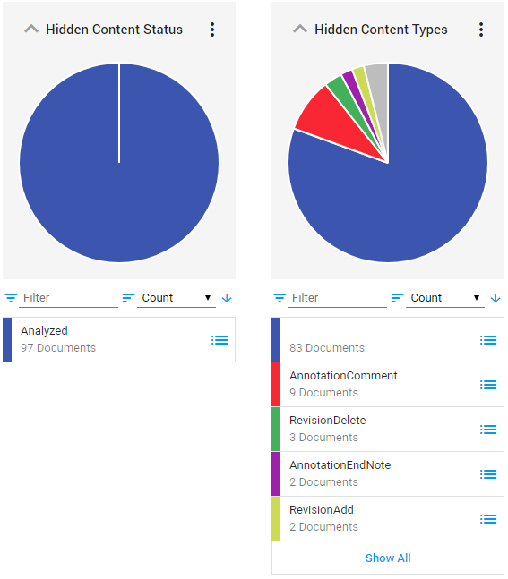
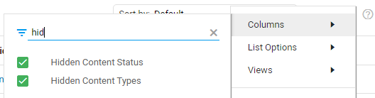
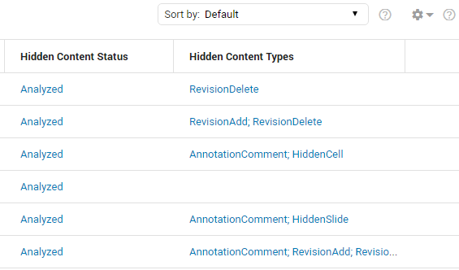
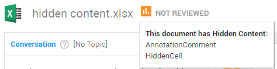

Detect and extract all content that is part of a document (including, for example, comments or speakers notes) during processing. Sometimes, specific types of content are not visible in Legal Review (see table below). When a search query is performed on a document, hits found in the hidden content cannot be viewed in Legal Review. You can view hidden content that is not shown in Legal Review, by downloading the native file. Please note that you need permission (sufficient rights) to do so and you need access to the original application. Produce documents only as images if you want to be sure that search hits found in hidden text are not produced.
The results are shown in Facets and Document List via two fields: Hidden Content Status and Hidden Content Types. In Document View, the icon next to the document name notifies the user when hidden content is detected. Hover above this icon to see which hidden content types are detected. If detection of hidden content failed, a red icon is shown. Documents without hidden content, do not show this notification.
Important: Hidden Content is enabled by default. Please contact your Administrator if it does not show in your matter.
Hidden Content Status
The Hidden content status field contains one of the following results:
Analyzed
The document is successfully analyzed.
Error during analysis
The document was analyzed, but an error occurred. It is not certain if all content is detected and extracted.
Analysis not run
The document is not analyzed. This happens in existing matters on already processed files (without Hidden Content enabled).
Hidden Content Types
Hidden content types inform you about the kind of content that is found in a document.
Hidden Content Type
Original Feature Name
File Types
Visible
Searchable
User Notification
AnnotationComment
Comment
Office, RTF, PDF
No
Yes
Yes
AnnotationEndNote
Endnote
Word
Yes
Yes
No
AnnotationFootNote
Footnote
Word, RTF, HTML, PDF
Yes
Yes
No
AnnotationSlideNote
Speakers Notes
Presentations
No
Yes
Yes
HiddenCell
Hidden Column or Hidden Row
Spreadsheets
Yes
Yes
No
HiddenSheet
Hidden Sheet
Spreadsheets
No
Yes
Yes
HiddenSlide
Hidden Slide
Presentations
Yes
Yes
No
HiddenText
Hidden Text
Word, RTF, Email
No
Yes
Yes
RevisionAdd
Track Changes - Add
Word, RTF, Email
Yes
Yes
No
RevisionDelete
Track Changes - Delete
Word, RTF, Email, HTML
No
No
Yes
Facets
View, via Browse, the Hidden Content Status (Analyzed, Error during analysis, Analysis not run) and/or the Hidden Content Types of documents.
If you cannot see these facets, select them via Manage Facets.

Document List
View, in Document List, the Hidden Content Status (Analyzed, Error during analysis, Analysis not run) and/or the Hidden Content Types of documents.
If you cannot see these columns, select them via the Settings icon

Then you can view for all documents in the list, the hidden content status and the hidden content types that are found:

Document View
When a document in Document View contains hidden content, the following icon appears next to the document name:
If detection of hidden content fails, the icon turns red:
If no hidden content was detected, this notification will not show.
Hover with your mouse above the icon to view the hidden content types in the document:

From the Fields panel (located bottom-left), you can search the metadata values (properties) associated with the document:
 icon next to the document name notifies the user when hidden content is detected. Hover above this icon to see which hidden content types are detected. If detection of hidden content failed, a red
icon next to the document name notifies the user when hidden content is detected. Hover above this icon to see which hidden content types are detected. If detection of hidden content failed, a red  icon is shown. Documents without hidden content, do not show this notification.
icon is shown. Documents without hidden content, do not show this notification.